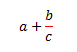

[Table of Contents] [docx version]
WordprocessingML Reference Material - Table of Contents
ins (Inserted Math Control Character)
This element specifies that the Office Open XML Math control character which contains this element was inserted and tracked as a revision. [Example: The insertion of a fraction bar. end example]
[Example: Consider a region of Office Open XML Math in a WordprocessingML document in which the control character for the fraction bar has been inserted, as follows:

This insertion is represented as the following WordprocessingML:
<m:f>
<m:fPr>
<m:ctrlPr>
<w:ins w:id="0" w:author="Joe Smith" w:date="2006-03-31T12:50:00Z">
...
</w:ins>
</m:ctrlPr>
</m:fPr>
...
</m:f>
The ins element contains all of the content which shall be treated as revision marked as inserted; in this case, the fraction bar was inserted by Joe Smith on March 31, 2006 at 12:50pm. end example]
|
Parent Elements |
|
ctrlPr (§7.1.2.23) |
|
Child Elements |
Subclause |
|
§2.3.2.26 |
|
Attributes |
Description |
|
author (Annotation Author) |
Specifies the author for an annotation within a WordprocessingML document.
If this attribute is omitted, then no author shall be associated with the parent annotation type.
[Example: Consider a comment represented using the following WordprocessingML fragment:
<w:… w:id="1" w:author="Example Author"> … </w:…>
The author attribute specifies that the author of the current annotation is Example Author, which may be used as desired. end example]
The possible values for this attribute are defined by the ST_String simple type (§2.18.89). |
|
date (Annotation Date) |
Specifies the date information for an annotation within a WordprocessingML document. The use of this information is outside of the scope of this Office Open XML Standard.
If this attribute is omitted, then no date information shall be associated with the parent annotation type.
[Example: Consider a comment represented using the following WordprocessingML fragment:
<w:… w:id="1" w:date="2006-01-01T10:00:00"> … </w:…>
The date attribute specifies that the date of the current annotation is January 1st 2006 at 10:00 AM, which may be used as desired. end example]
The possible values for this attribute are defined by the ST_DateTime simple type (§2.18.15). |
|
id (Annotation Identifier) |
Specifies a unique identifier for an annotation within a WordprocessingML document. The restrictions on the id attribute, if any, are defined by the parent XML element.
If this attribute is omitted, then the document is non-conformant.
[Example: Consider an annotation represented using the following WordprocessingML fragment:
<w:… w:id="1" … > … </w:…>
The id attribute specifies that the ID of the current annotation is 1. This value is used to uniquely identify this annotation within the document content. end example]
The possible values for this attribute are defined by the ST_DecimalNumber simple type (§2.18.16). |
The following XML Schema fragment defines the contents of this element:
<complexType name="CT_RPrChange">
<complexContent>
<extension base="CT_TrackChange">
<sequence>
<element name="rPr" type="CT_RPrOriginal" minOccurs="1"/>
</sequence>
</extension>
</complexContent>
</complexType>